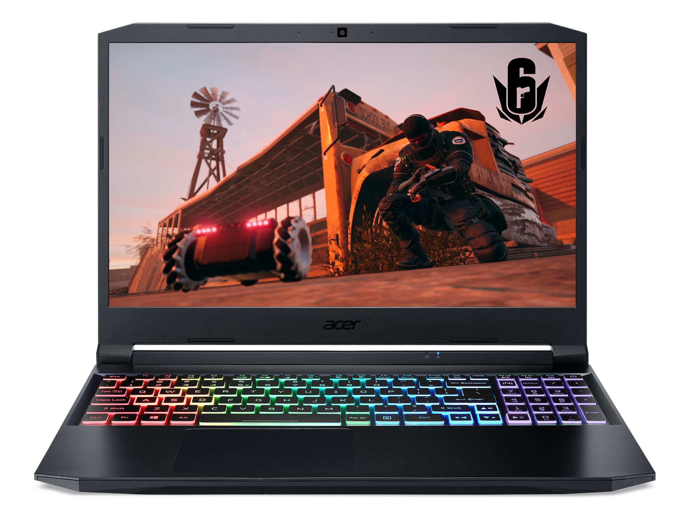
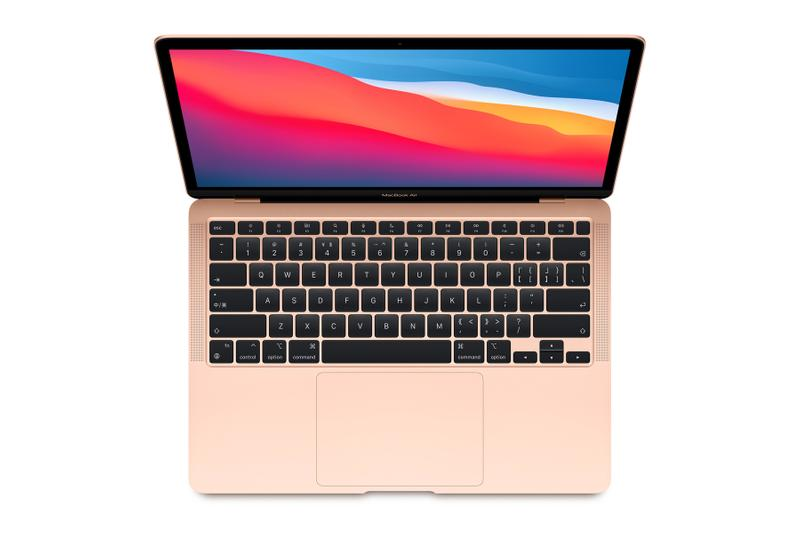
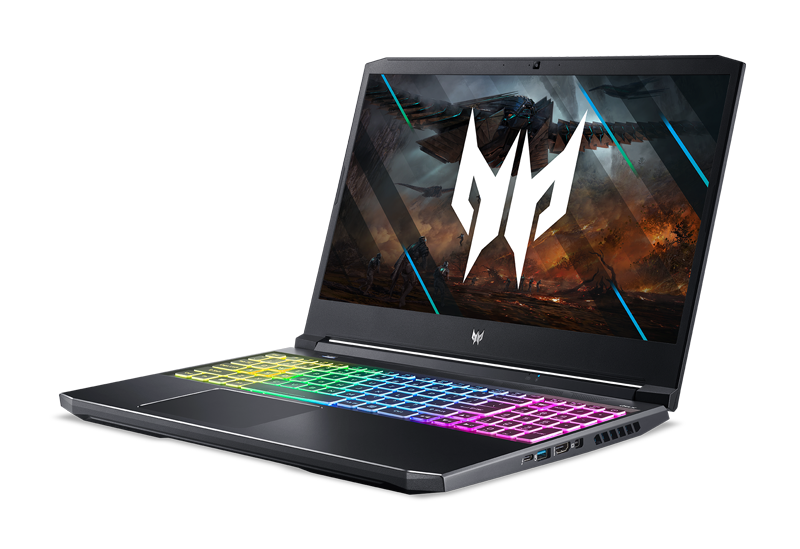
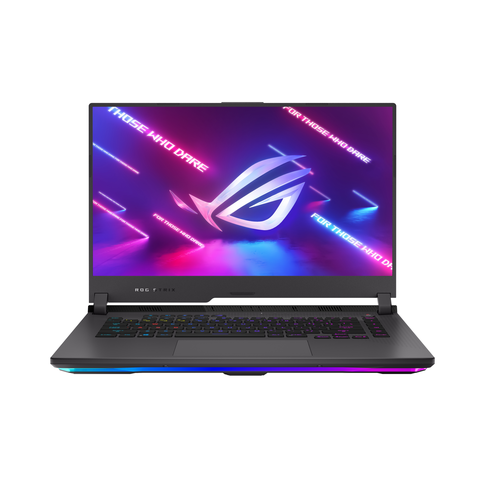

GIỚI THIỆU VỀ LAPTOP
Acer Nitro 5

Acer Nitro 5 2021 AN515 45 R3SM tích hợp những “vũ khí” mới nhất. Bao gồm CPU AMD Ryzen 5 5600H, VGA NVIDIA GeForce GTX 1650 cho hiệu năng xử lý mạnh mẽ.
Nitro 5 2021 AN515 45 R3SM sở hữu thiết kế ấn tượng với hai màu đen-đỏ chủ đạo. Bề mặt được thiết kế hầm hố và góc cạnh hơn. Thể hiện phong cách hiếu chiến đặc trưng của dòng Nitro. Viền màn hình siêu mỏng 6.3mm cho cảm giác không gian thoáng đãng hơn trước. Với Nitro 5 2021 AN515 45 R3SM trải nghiệm chơi game phấn khích hơn nhờ vào đèn nền bàn phím RGB 4 vùng. Giờ đây, game thủ có thể tùy chỉnh các thiết lập màu sắc và hiệu ứng dễ dàng ngay trên phần mềm Nitro Sense được tích hợp sẵn.Hệ thống tản nhiệt gồm 2 quạt tản nhiệt thế hệ mới kết hợp công nghệ Acer CoolBoost™ giúp tăng 10% tốc độ quạt. Giảm nhiệt độ CPU/GPU thêm 9%.
MacBook Air 2020

Trong cùng 1 năm MacBook Air 2020 mới được Apple nâng cấp ra mắt với sự xuất hiện của con Chip Apple M1 được phát triển với kiến trúc ARM mới, nhanh hơn 98% PC, pin 18 giờ. Đây là chiếc MacBook Air đầu tiên và cũng là chiếc máy Mac đầu tiên của Apple trong việc chuyển dịch sang hệ chip ARM. Apple cho biết chiếc MacBook Air 2020 mới này sẽ cho hiệu năng mạnh mẽ nhanh hơn tới 3 lần so với "chiếc laptop Windows bán chạy nhất trong phân khúc" và mạnh nhanh hơn "98% PC được bán ra trong năm ngoái". Bên cạnh đó, Apple cũng tuyên bố con chip M1 mới cho hiệu năng và khả năng tiêu thụ năng lượng hiệu quả hơn bất cứ con chip Intel nào.Một trong những hệ quả của việc chuyển dịch sang nền tảng ARM mới trên dòng Mac năm nay là các ứng dụng của iOS có thể được cài đặt trực tiếp trên nền tảng macOS Big Sur, cho phép người dùng sử dụng các ứng dụng được thiết kế riêng cho iOS trên chính chiếc Mac, đây cũng là tin vui dành cho các lập trình viên iOS và macOS khi giờ đây họ có thể đồng nhất ứng dụng giữa các nền tảng. Thậm chí cả các ứng dụng nặng chuyên dụng như Adobe Photoshop hay Lightroom đều hoạt động mượt mà trên dòng MacBook mới.
Acer Helios 300

Dòng laptop Helios của Acer luôn có truyền thống thiết kế với vẻ ngoài hầm hồ, bền bỉ, đậm chất gaming. Khung máy gọn gàng, chắc chắn với những điểm vát ấn tượng ở phần viền màn hình cũng như phần thân máy. Đem lại một vẻ ngoài bắt mắt và ấn tượng. Máy đi kèm chip i7 đời 11 hiệu năng cao cùng card đồ họa mạnh mẽ RTX 3050Ti xử lý mọi tác vụ gaming một cách mượt mà, êm ái.Những gì tốt nhất luôn dành cho bạn. Acer Predator Helios chắc chắn sẽ không làm bạn thất vọng.Sức mạnh hợp thể của bộ vi xử lý mạnh mẽ i7-11800H cùng RTX™ 3050Ti 4GB GDDR6 đem lại một hiệu năng mạnh mẽ, tối ưu và vượt trội dẫn đầu. Các GPU này mang lại hiệu suất tối ưu cho người chơi và người sáng tạo. Chúng được cung cấp năng lượng bởi kiến trúc Bộ khuếch đại RTX thế hệ 2 của NVIDIA - với Lõi dò tia mới, Lõi Tensor và các bộ xử lý đa xử lý trực tuyến để có một bước nhảy vọt về hiệu suất. Máy tính xách tay này cũng sử dụng Công nghệ NVIDIA Max-Q cho hiệu suất và hiệu suất cao nhất.
Asus ROG Strix G15

Phong cách thể thao thể hiện qua ba màu sắc khác biệt giúp nâng tầm diện mạo và phong cách của bạn. Những phiên bản với màu đen nguyên bản Original Black, xám cực chất Eclipse Gray, và Electro Punk rực rỡ sẽ thể hiện phong cách của bạn. Chơi game tại bất kỳ đâu với khung máy có kích thước nhỏ hơn đến 7% và gọn nhẹ hơn những thế hệ tiền nhiệm. Những biểu tượng và đường cắt tinh tế tô điểm bên ngoài máy và thậm chí thêm phần thu hút ở phần đế máy, tạo điểm nhấn khác biệt từ mọi góc độ. Làm bừng sáng cho môi trường xung quanh bạn với hệ thống Aura Sync nổi bật từ logo kim loại của ROG, dọc bàn phím có đèn nền tới dải đèn chiếu sáng ở mặt đáy. Cuộc sống bừng sáng với RGB. Dải đèn chiếu sáng được thiết kế giúp tăng cường mật độ đèn LED, nhằm tạo nên hiệu ứng ánh sáng tinh tế hơn ở mặt đáy. Cá nhân hóa cài đặt Aura Sync để thiết lập chế độ chơi game lý tưởng trên toàn hệ sinh thái các thiết bị tương thích. Từ nắp phủ nhôm tới kết cấu độc đáo ở mặt đáy, chiếc laptop này là sự tổng hòa của khả năng hoạt động bền bỉ và phong cách mạnh mẽ.